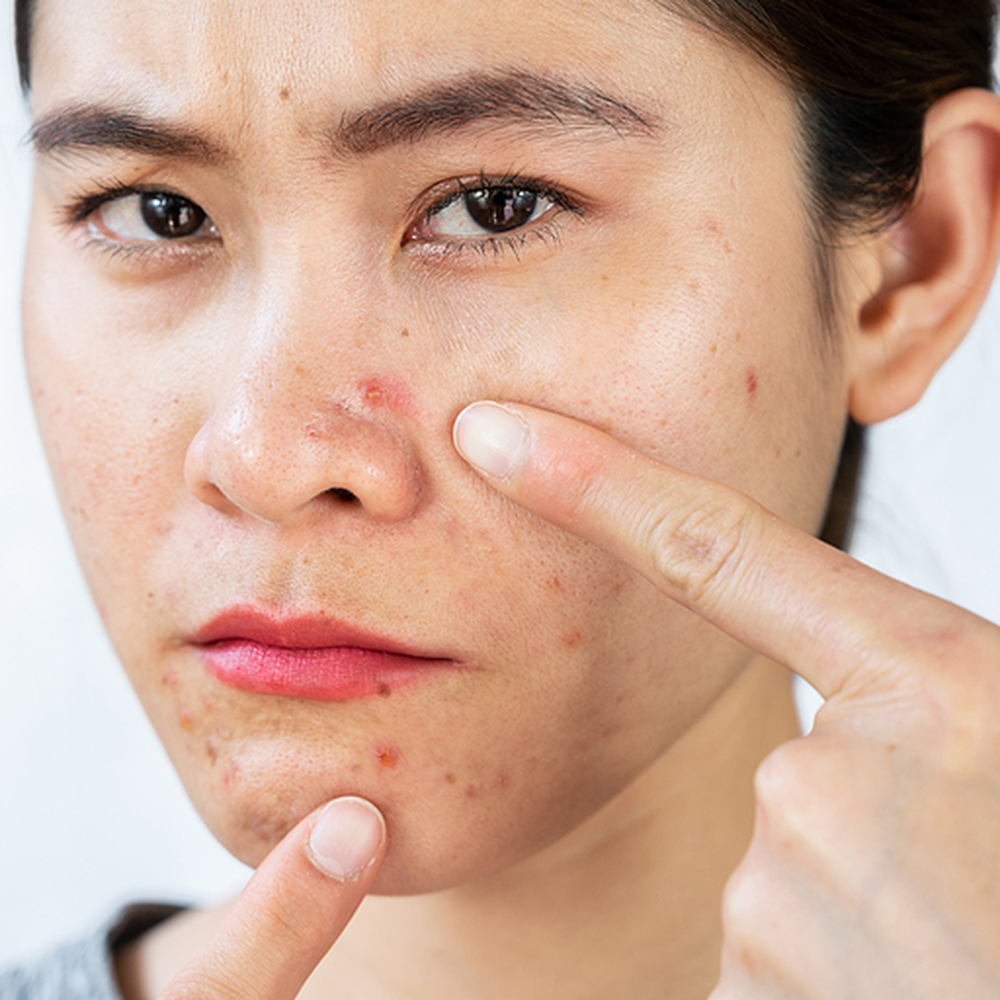
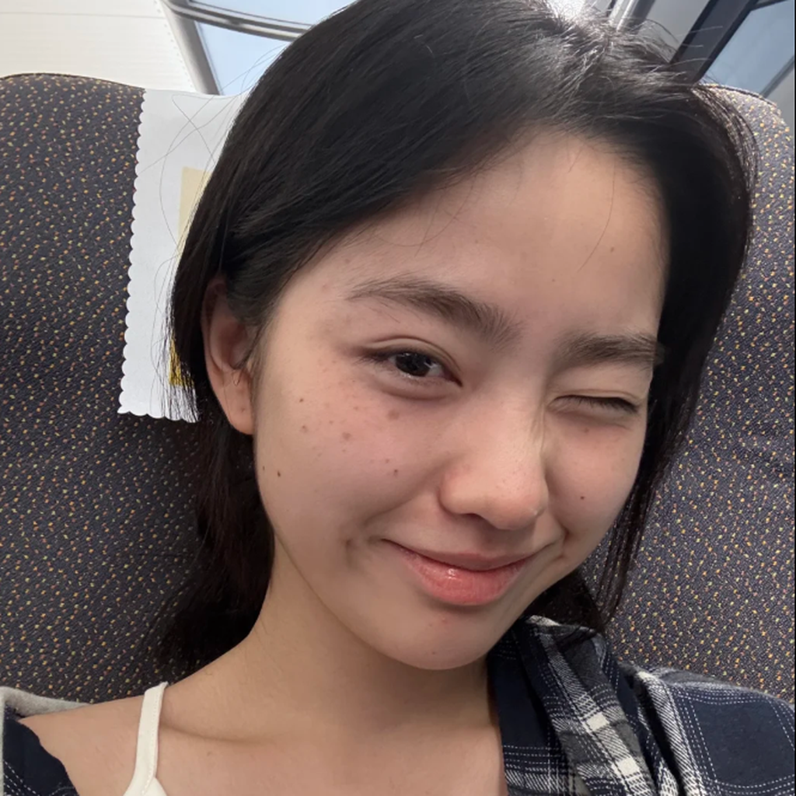
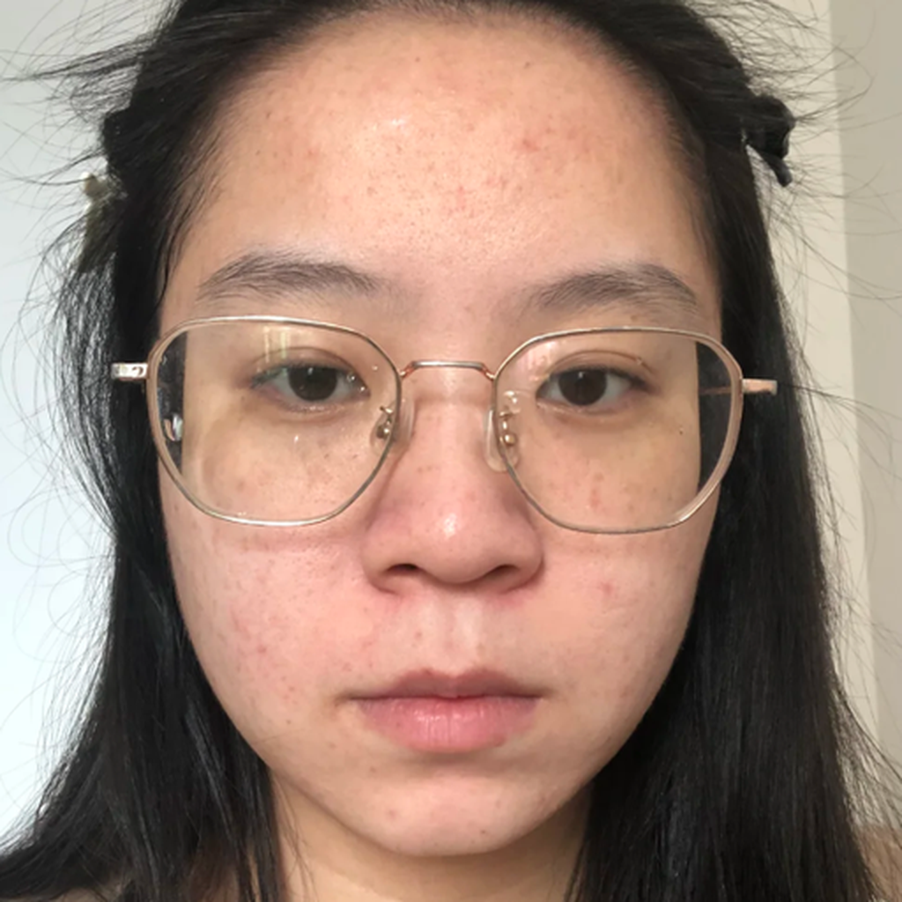
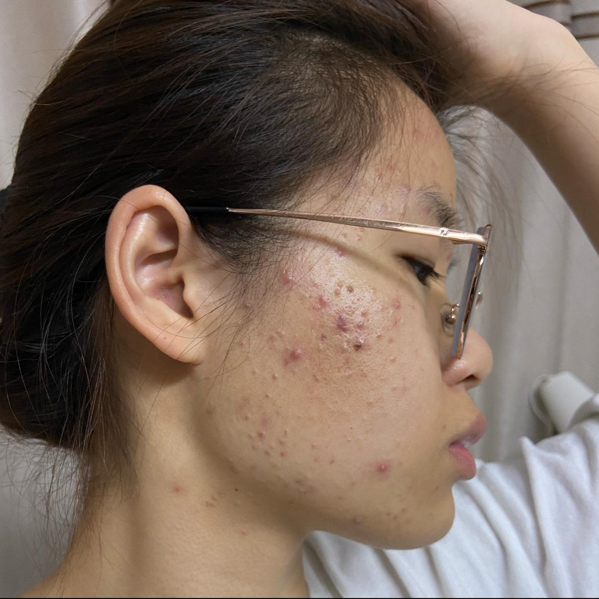
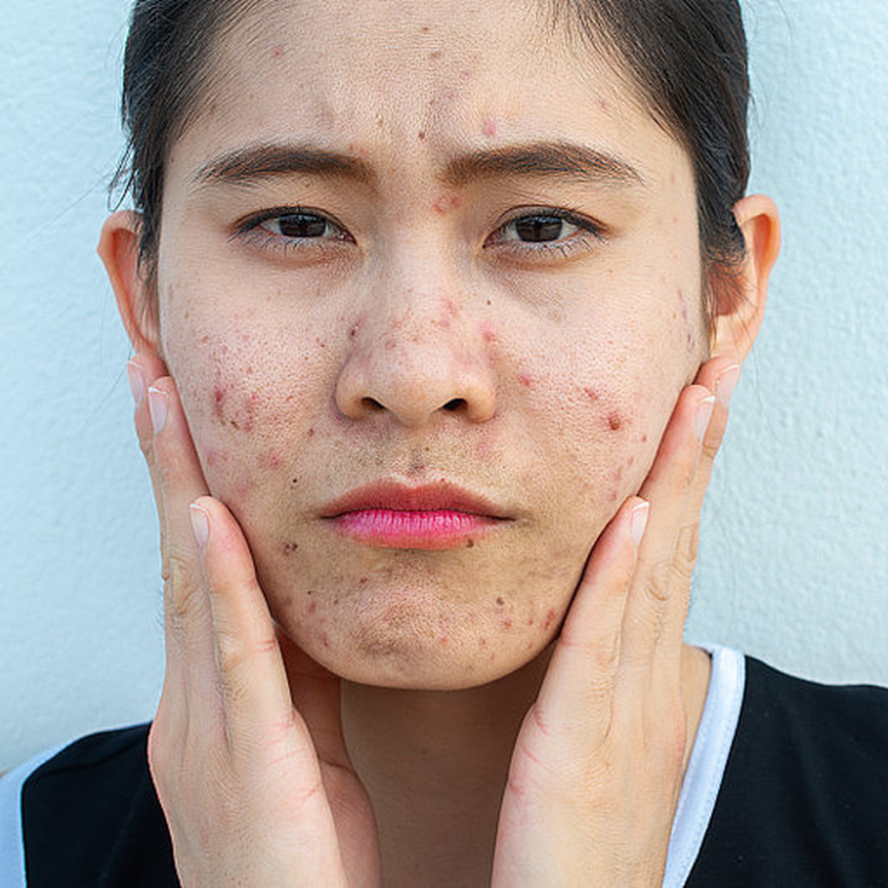
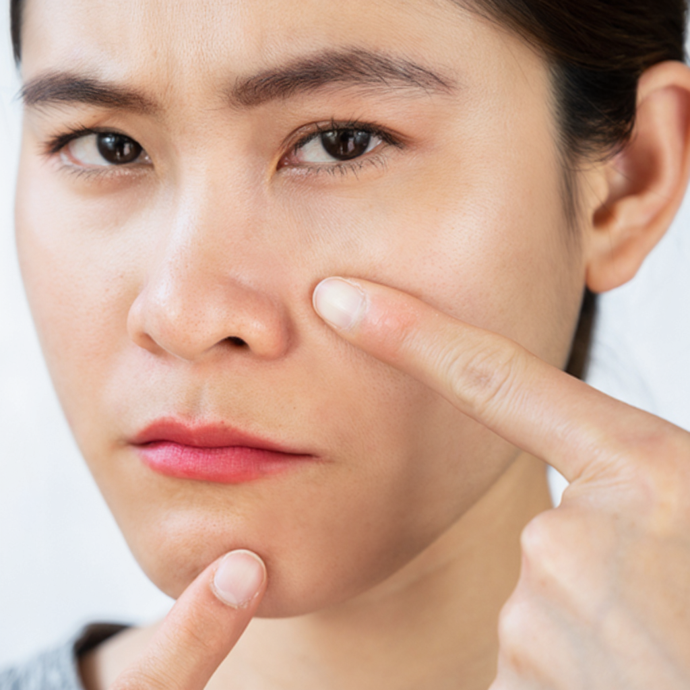

BeautyGRPO employs online RL to boost realism and aesthetics in high-fidelity image editing through human preference alignment.






Abstract
Face retouching requires removing subtle imperfections while preserving unique facial identity features, in order to enhance overall aesthetic appeal. However, existing methods suffer from a fundamental trade-off. Supervised learning on labeled data is constrained to pixel-level label mimicry, failing to capture complex subjective human aesthetic preferences. Conversely, while online reinforcement learning (RL) excels at preference alignment, its stochastic exploration paradigm conflicts with the high-fidelity demands of face retouching and often introduces noticeable noise artifacts due to accumulated stochastic drift. To address these limitations, we propose BeautyGRPO, a reinforcement learning framework that aligns face retouching with human aesthetic preferences. We construct FRPref-10K, a fine-grained preference dataset covering five key retouching dimensions, and train a specialized reward model capable of evaluating subtle perceptual differences. To reconcile exploration and fidelity, we introduce Dynamic Path Guidance (DPG). DPG stabilizes the stochastic sampling trajectory by dynamically computing an anchor-based ODE path and replanning a guided trajectory at each sampling timestep, effectively correcting stochastic drift while maintaining controlled exploration. Extensive experiments show that BeautyGRPO outperforms both specialized face retouching methods and general image editing models, achieving superior texture quality, more accurate blemish removal, and overall results that better align with human aesthetic preferences.
Overview of FRPref-10K construction, reward model training, and BeautyGRPO with Dynamic Path Guidance (DPG)
Top: FRPref-10K dataset curation pipeline. Multiple retouched candidates are generated with diverse editing models, preference pairs are formed via output-vs-output/label comparisons, and are annotated by VLMs across five quality dimensions before human verification. Bottom left: Three-stage reward model training, including SFT, self-training with consistency filtering, and GRPO. Bottom right: BeautyGRPO training with DPG on a FluxKontext-LoRA backbone.
Dynamic Path Guidance (DPG) for Anchored Exploration
DPG mechanism dynamically replans trajectories at every step, effectively correcting stochastic drift and achieving a balance between exploration and fidelity.
Results
BeautyGRPO effectively removes blemishes and dullness while naturally preserving skin texture, original pores, authentic radiance, and distinctive personal features such as moles. The resulting visual output is more translucent and sophisticated.
BibTeX
@misc{yang2026beautygrpo,
title={{BeautyGRPO}: Aesthetic Alignment for Face Retouching via Dynamic Path Guidance and Fine-Grained Preference Modeling},
author={Jiachen Yang and Xianhui Lin and Yi Dong and Zebiao Zheng and Xing Liu and Hong Gu and Yanmei Fang},
year={2026},
url={https://arxiv.org/abs/2603.01163},
}